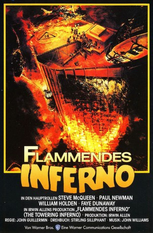
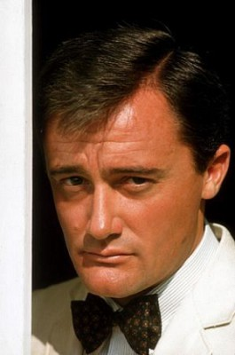
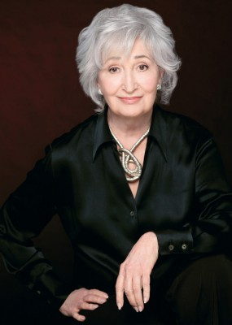

#4283 Flammendes Inferno
Alternativ: The Towering Inferno
Auszeichnungen: 3 Oscars gewonnen für 5 Oscars nominiert 2 GoldenGlobes gewonnen 2 BAFTA-Awards gewonnen
 
 IMDB-Wertung: 6.9 / 10
IMDB-Wertung: 6.9 / 10  Metascore: 0
Metascore: 0 
Der höchste Wolkenkratzer der Welt soll mit einem rauschenden Fest eröffnet werden. Während die Gäste im 135. Stock feiern, bricht weiter unten Feuer aus. Die Menschen sind von Rauch und Flammen eingeschlossen. Feuerwehrchef O'Hallorhan (Steve McQueen) und der Architekt des Gebäudes, Doug Roberts (Paul Newman), starten eine verzweifelte Rettungsaktion. - Der Katastrophenklassiker schlechthin. Drei Oscars!
Jahr: 1974
Dauer: 164 Minuten
FSK: 16
Land: USA Studio: 20th Century FoxTonspuren:
Untertitel:
Auflösung: 1080p (1920x816) Größe: 6983 MB
Genre: Action, Drama, Thriller
Regisseur: John Guillermin
Drehbuch: Paul Bettany
Soundtrack:
Darsteller:
 Steve McQueen als Chief O'Hallorhan
Steve McQueen als Chief O'Hallorhan Paul Newman als Doug Roberts
Paul Newman als Doug Roberts William Holden als Jim Duncan
William Holden als Jim Duncan Faye Dunaway als Susan
Faye Dunaway als Susan Fred Astaire als Harlee Claiborne
Fred Astaire als Harlee Claiborne- Susan Blakely als Patty
 Richard Chamberlain als Simmons
Richard Chamberlain als Simmons- Jennifer Jones als Lisolette
 O.J. Simpson als Jernigan
O.J. Simpson als Jernigan-  Robert Vaughn als Senator Parker
 Robert Wagner als Bigelow
Robert Wagner als Bigelow- Susan Flannery als Lorrie
- Sheila Allen als Paula Ramsay
 Norman Burton als Giddings
Norman Burton als Giddings- Jack Collins als Mayor Ramsay
 Don Gordon als Kappy
Don Gordon als Kappy Felton Perry als Scott
Felton Perry als Scott Gregory Sierra als Carlos
Gregory Sierra als Carlos Ernie F. Orsatti als Mark Powers
Ernie F. Orsatti als Mark Powers Dabney Coleman als Deputy Chief #1
Dabney Coleman als Deputy Chief #1- Ross Elliott als Deputy Chief #2
 Olan Soule als Johnson
Olan Soule als Johnson- Mike Lookinland als Phillip Allbright
 George Wallace als Chief Officer
George Wallace als Chief Officer William Bassett als Leasing Agent
William Bassett als Leasing Agent John Crawford als Callahan
John Crawford als Callahan Erik L. Nelson als Wes
Erik L. Nelson als Wes- Art Balinger als Announcer
- Mike Johnson als Fire Victim in Elevator , uncredited
 Tom Lawrence als Bigelow's Assistant , uncredited
Tom Lawrence als Bigelow's Assistant , uncredited- Maureen McGovern als Herself - Singer at Party , uncredited
- John Moio als Security Guard , uncredited
-  Jennifer Rhodes als Janet - Secretary , uncredited
 Leoda Richards als Party Guest , uncredited
Leoda Richards als Party Guest , uncredited Hank Robinson als Dinner Guest , uncredited
Hank Robinson als Dinner Guest , uncredited- Elizabeth Rogers als Lady in Buoy
- Ann Leicester als Guest
- Norman Grabowski als Flaker
- Carlena Gower als Angela Allbright
- Carol McEvoy als Mrs. Allbright
- Scott Newman als Young Fireman
- Paul Comi als Tim
- Patrick Culliton als Technician
- Norman Hicks als Pilot
- Thomas Karnahan als Co-Pilot
- Kathryn Janssen als Party Guest , uncredited
- William Traylor als Security Guard in Control Room , uncredited
- John Allen Vick als Cab Driver , uncredited
Datei: X:\1974\Flammendes Inferno (1974, FSK16, 1920x816).mkv seit 31.08.2016
Festplatte: HD 1971-1979
 Es gibt insgesamt 33 Filme in der Gruppe '1974'
Es gibt insgesamt 33 Filme in der Gruppe '1974'